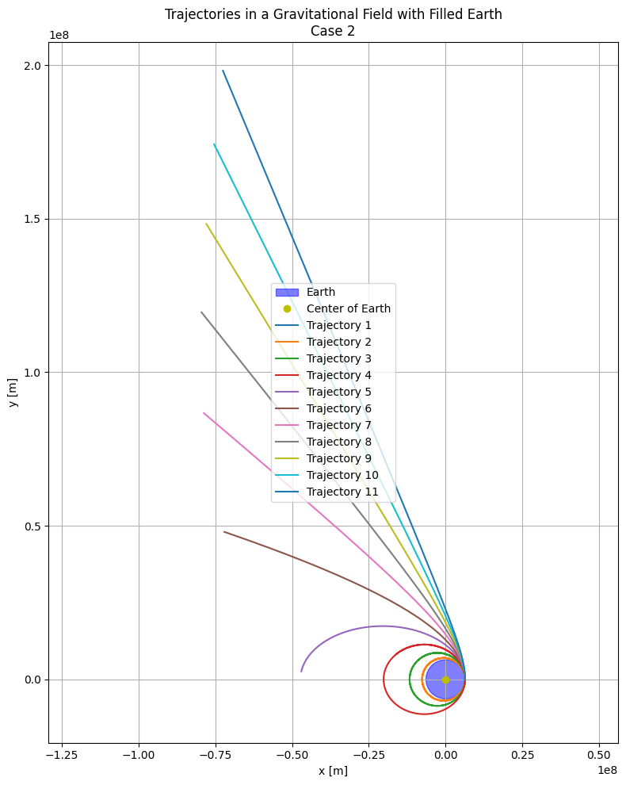

Problem 3
Payload Trajectories Near Earth
When a payload is let go from a rocket traveling near Earth, its path is shaped by the initial speed it has and Earth’s gravity. These paths take the form of conic sections, and the type of trajectory depends on the object’s total mechanical energy.
Overview of Orbital Paths
| Path Type | Condition (Total Energy) | Behavior |
|---|---|---|
| Ellipse | \(E < 0\) | Closed orbit — payload stays bound to Earth |
| Parabola | \(E = 0\) | Edge case — just escapes Earth’s gravity |
| Hyperbola | \(E > 0\) | Escape route — payload leaves permanently |
Total Energy Equation
Where:
- \(m\) = payload mass
- \(v\) = velocity at release
- \(G\) = universal gravitational constant
- \(M\) = Earth's mass
- \(r\) = distance from Earth’s center
1. Elliptical Path
- Condition: \(v < v_{esc}\)
- Shape: Closed orbital motion
- Example: Satellites in Earth orbit
2. Parabolic Path
- Condition: \(v = v_{esc} = \sqrt{\frac{2GM}{r}}\)
- Shape: Open path with zero excess energy
- Example: Rare theoretical boundary case
3. Hyperbolic Path
- Condition: \(v > v_{esc}\)
- Shape: Open curve leading away from Earth
- Example: Probes headed for deep space
4. Suborbital Trajectory
- Condition: Released with insufficient horizontal speed, near atmosphere
- Shape: Arcing path that falls back to Earth
- Example: Missiles, test vehicles, and reentry modules
Recap
- Elliptical: Object remains in Earth orbit.
- Parabolic: Reaches escape speed with no surplus energy.
- Hyperbolic: Surpasses escape speed, permanently departing.
- Suborbital: Lacks energy for orbit, falls back.
Numerical Modeling: Simulating Payload Motion
Gravitational Force
The motion of a freely released payload is controlled by gravitational attraction, expressed by Newton’s universal gravitation law:
Where:
- \(G = 6.674 \times 10^{-11} \, \text{m}^3 \, \text{kg}^{-1} \, \text{s}^{-2}\)
- \(M = 5.972 \times 10^{24} \, \text{kg}\)
- \(r\): Distance from Earth’s center
- \(\hat{r}\): Unit vector from Earth to payload
Via Newton’s Second Law, \(F = ma\), we derive:
Solving with Runge-Kutta (RK4)
To compute the trajectory numerically, we use the Runge-Kutta 4th order method. This transforms the second-order ODE into a first-order system:
Initial Setup
- Starting Point: Payload begins 500 km above Earth’s surface, so \(r_0 = R_{\text{Earth}} + 500\,\text{km}\)
- Initial Speed: Varies depending on the mission goal (orbit, escape, or suborbital arc)
Applications of Trajectories
1. Achieving Orbit (Elliptical or Circular)
- How: Released with enough tangential velocity to counter gravity
- Outcome: Remains in a closed orbit
- Requirement: \(v < v_{esc}\) and \(E < 0\)
- Examples: Satellites, space stations
Typical Case:
\(\(v_{\text{orbit}} = \sqrt{\frac{GM}{r}} \approx 7.7 \, \text{km/s (at 300 km altitude)}\)\)
2. Reentry (Suborbital or Decaying Orbit)
- How: Released with inadequate velocity or affected by drag
- Outcome: Falls back to Earth
- Example: Test capsules, missiles
Visual: Steep arc that reenters the atmosphere, like a downward parabola
3. Escape (Hyperbolic Path)
- How: Achieves or exceeds escape velocity
- Outcome: Leaves Earth’s gravity permanently
- Requirement: \(v \geq \sqrt{\frac{2GM}{r}}\) and \(E \geq 0\)
- Examples: Voyager, interplanetary missions
At Sea Level:
\(\(v_{\text{esc}} \approx 11.2 \, \text{km/s}\)\)
Comparative Scenarios
| Condition | Trajectory Type | Speed Range | Purpose |
|---|---|---|---|
| Orbital Insertion | Elliptical or Circular | ~7.7 km/s | Earth satellites, ISS |
| Reentry | Suborbital | < 7.7 km/s | Capsules, suborbital flights |
| Escape | Hyperbolic | > 11.2 km/s | Interplanetary or interstellar |
Visuals
- 1st Cosmic Velocity → stable circular orbit
- 2nd Cosmic Velocity → parabolic escape
- 3rd Cosmic Velocity → hyperbolic path beyond Earth and Sun

Motion in Uniform Density Earth — Case 1

Assuming Earth is a filled sphere with constant density, this simulation plots trajectories under a uniform gravitational field.
- Orbits 1–4: Bound paths (elliptical/circular)
- Path 5: A high arc; object almost escapes
- Path 6: Escape trajectory — object exits gravity well
Alternate Setup — Case 2
